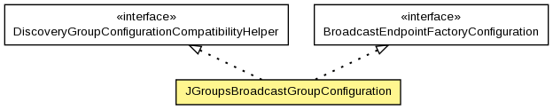

org.hornetq.api.core
Class JGroupsBroadcastGroupConfiguration
java.lang.Object
 org.hornetq.api.core.JGroupsBroadcastGroupConfiguration
org.hornetq.api.core.JGroupsBroadcastGroupConfiguration
- All Implemented Interfaces:
- Serializable, BroadcastEndpointFactoryConfiguration, DiscoveryGroupConfigurationCompatibilityHelper
public final class JGroupsBroadcastGroupConfiguration
- extends Object
- implements BroadcastEndpointFactoryConfiguration, DiscoveryGroupConfigurationCompatibilityHelper

The configuration for creating broadcasting/discovery groups using JGroups channels
There are two ways to constructing a JGroups channel (JChannel):
- by passing in a JGroups configuration file
The file must exists in the hornetq classpath. HornetQ creates a JChannel with the
configuration file and use it for broadcasting and discovery. In standalone server
mode HornetQ uses this way for constructing JChannels.
- by passing in a JChannel instance
This is useful when HornetQ needs to get a JChannel from a running JGroups service as in the
case of AS7 integration.
Note only one JChannel is needed in a VM. To avoid the channel being prematurely disconnected
by any party, a wrapper class is used.
- Author:
- Andy Taylor, Howard Gao
- See Also:
JChannelWrapper, JChannelManager,
Serialized Form
| Methods inherited from class java.lang.Object |
clone, equals, finalize, getClass, hashCode, notify, notifyAll, toString, wait, wait, wait |
JGroupsBroadcastGroupConfiguration
public JGroupsBroadcastGroupConfiguration(String jgroupsFile,
String channelName)
JGroupsBroadcastGroupConfiguration
public JGroupsBroadcastGroupConfiguration(org.jgroups.JChannel channel,
String channelName)
createBroadcastEndpointFactory
public BroadcastEndpointFactory createBroadcastEndpointFactory()
- Specified by:
createBroadcastEndpointFactory in interface BroadcastEndpointFactoryConfiguration
getLocalBindAddress
public String getLocalBindAddress()
- Specified by:
getLocalBindAddress in interface DiscoveryGroupConfigurationCompatibilityHelper
getLocalBindPort
public int getLocalBindPort()
- Specified by:
getLocalBindPort in interface DiscoveryGroupConfigurationCompatibilityHelper
getGroupAddress
public String getGroupAddress()
- Specified by:
getGroupAddress in interface DiscoveryGroupConfigurationCompatibilityHelper
getGroupPort
public int getGroupPort()
- Specified by:
getGroupPort in interface DiscoveryGroupConfigurationCompatibilityHelper
Copyright © 2013 JBoss, a division of Red Hat. All Rights Reserved.